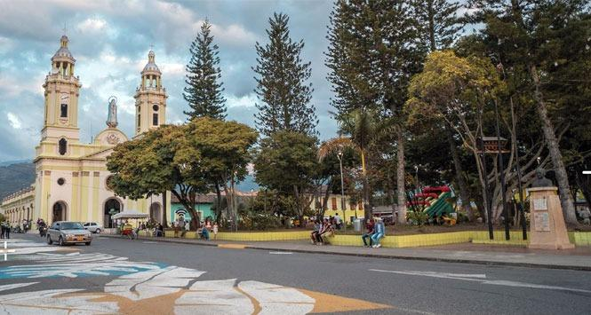
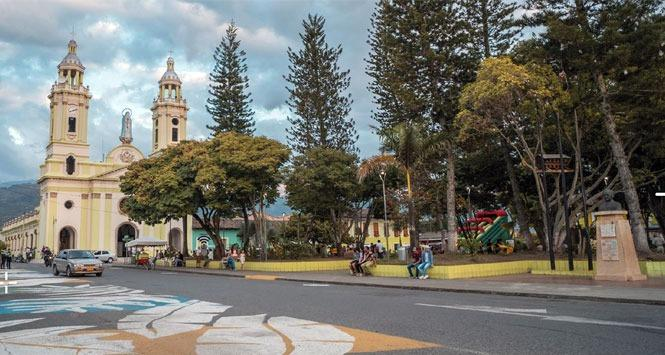

Region: Pacifica
Puntos de Interes
Pico de Loro
Es una de las montañas más famosas de la región, ubicada
en los Farallones de Cali. Es visitado principalmente
por deportistas y turistas que desean aventurarse aun
ascenso de 1.200 m hasta llegar a su cima. Tiene una
distancia de 2.860 metros sobre el nivel del mar

Sevilla
Conocida como la ‘Capital Cafetera de Colombia’. Hace parte
de los ‘Pueblitos Mágicos’
del Valle, lleno de hermosos
balcones y arquitectura de la colonización.
Es un lugar
perfecto para tomar unas fotos espectaculares y disfrutar
del mejor café, cultivado en la región.
Lago Calima
El Lago Calima se ha convertido en uno de los destinos turísticos
más importantes del sur occidente Colombiano, gracias a su clima
que varía entre 12º y 20º, paisajes y oferta turística.
Posee los vientos más rápidos de Latinoamérica y el tercero
en el mundo en esta categoría, cuyas refrescantes corrientes
provenientes del Pacífico le confieren un clima ideal.

Ginebra
Si deseas probar el mejor sancocho de gallina del Valle, a Ginebra
tienes que ir.
Su gastronomía es uno de sus principales atractivos:
Arroz Atollado, las Tostadas de Plátano
con su exquisita Salsa
Criolla o tradicional “Hogao”, Hojaldras,
las deliciosas
Marranitas y por supuesto, su Sancocho cocinado
en fogón de
leña.

 

Gastronomia
Entre sus comidas más representativas encontramos exóticas bebidas
como el champús, un refresco elaborado con lulo, maíz, piña,
panela, canela, clavos y hojas de naranjo; la lulada hecha con
lulo machacado y azúcar; el cholado, una refrescante combinación
de hielo triturado, frutas picadas, esencias y leche condensada.